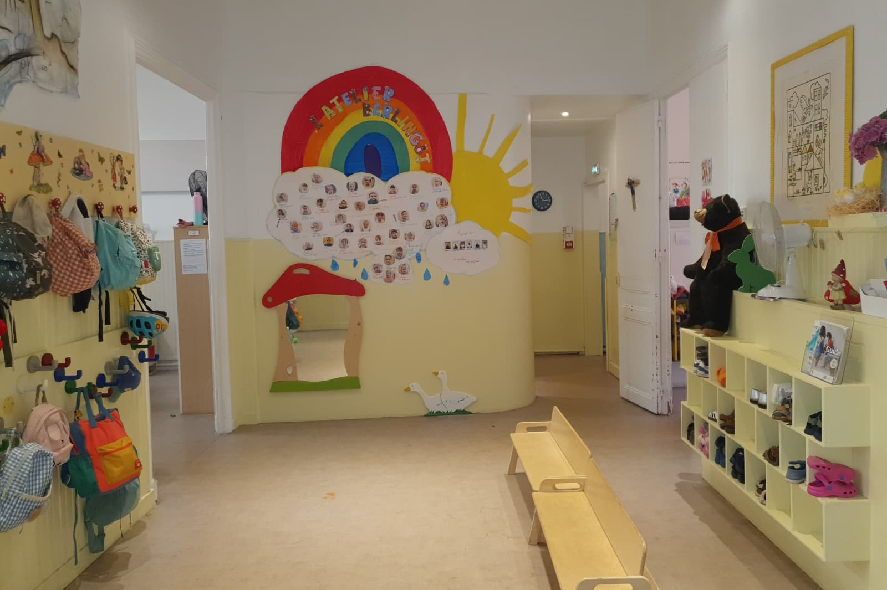
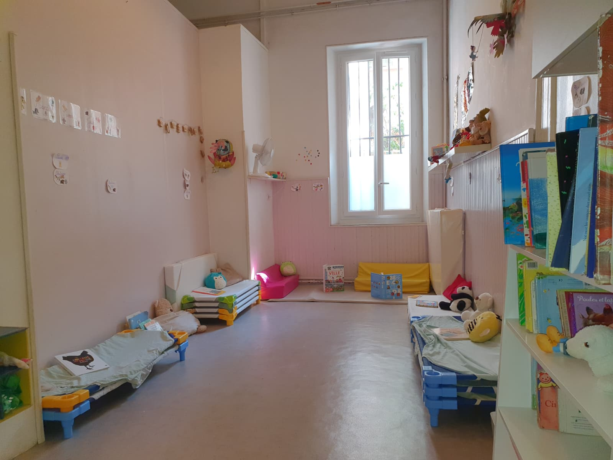
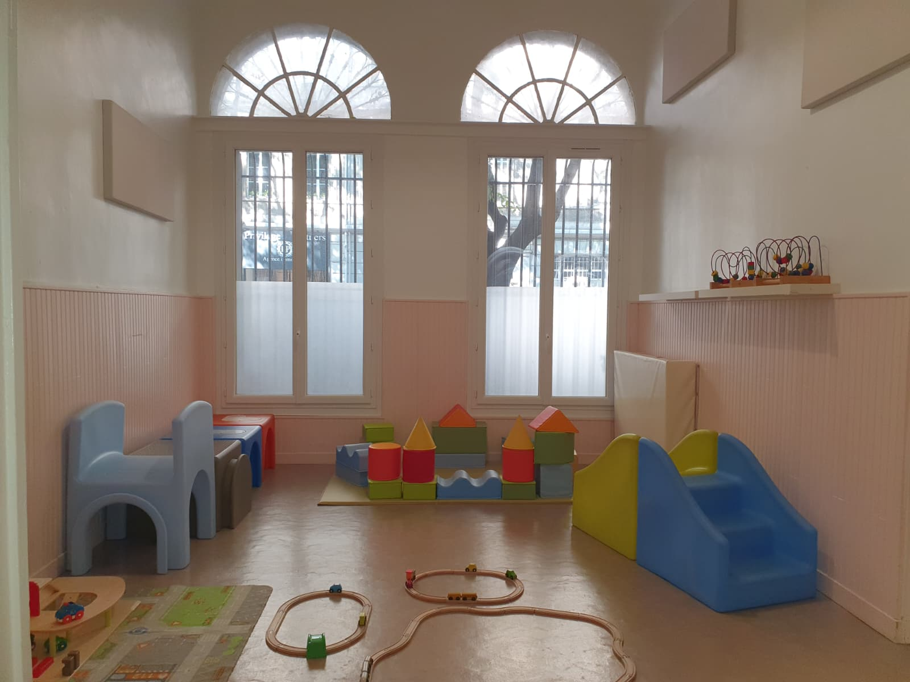
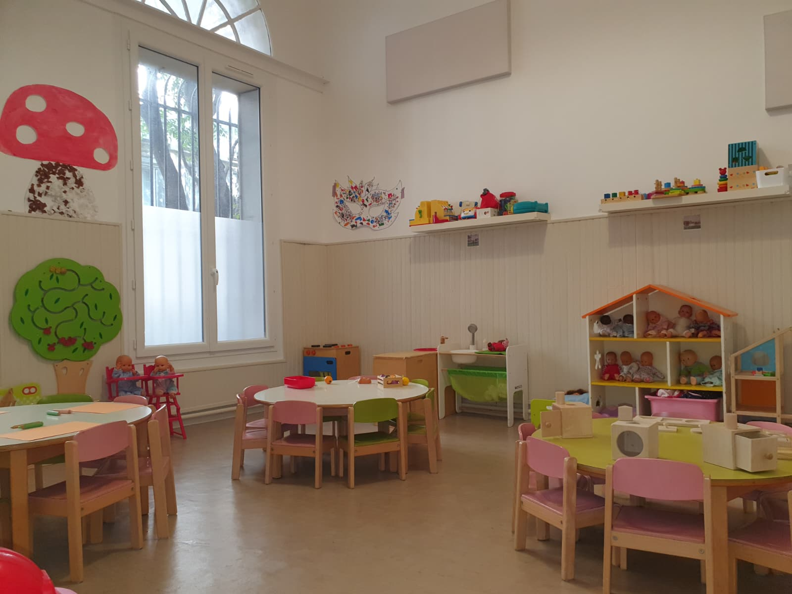

L'atelier conte
Le langage, l'imaginaire et le repos : un cocon doux qui se transforme en dortoir le temps de la sieste.
La visite guidée
Notre multi-accueil a été conçu autour du principe d'espace ouvert : des lieux communicants, chacun dédié à un type d'activité, où l'enfant explore librement et en toute sécurité. Suivez le guide, pièce par pièce.
L'aménagement de l'espace est une condition essentielle pour permettre à l'enfant d'évoluer en toute sécurité et encourager son autonomie. Le matériel a une place bien définie que l'enfant reconnaît : il sait où trouver, où rendre, où aller selon son envie d'action ou de calme. Les espaces communiquent et favorisent la libre circulation, l'exploration et la rencontre avec l'autre.
Le langage, l'imaginaire et le repos : un cocon doux qui se transforme en dortoir le temps de la sieste.
Le « petit gymnase » : bouger, sauter, grimper, danser — le plaisir du mouvement en toute sécurité.
Les activités manuelles, la vie pratique, la collation et les repas dans la salle lumineuse du quotidien.
L'enfant apprend à découvrir les différents lieux de la crèche progressivement ; c'est par des repères simples mais constants qu'il se sent sécurisé durant l'absence de ses parents avec l'accompagnement du professionnel. Les espaces sont ouverts et communiquent ainsi entre eux.

Le premier geste de la journée se joue ici : accueil, dépose des affaires sur les portes-manteaux et dans les casiers pour les chaussures. L'enfant est accompagné en douceur par sa famille durant ce moment de transition.

Entièrement dédié aux histoires et aux contes, c'est le cocon doux de la crèche : bibliothèque de fond avec des livres souples, cartonnés et en tissu, marionnettes, ombres chinoises et kamishibaï pour les ateliers langagiers du matin.
Au moment de la sieste, la salle se métamorphose : l'atelier conte devient dortoir. Chaque enfant dispose de son couchage personnel — petit lit où il peut se reposer. Deux professionnelles accompagnent les réveils échelonnés dans ce lieu sécurisant et propice au calme.

La salle d'activités motrices invite au mouvement : tapis, modules de psychomotricité, petits parcours, matériel d'escalade adapté et espace d'expression corporelle sur musiques et rondes. Espace aménagé au gré des activités proposées.
On y recherche avant tout le plaisir du mouvement et la découverte du corps, dans le respect de la liberté motrice de chacun.

C'est la salle du quotidien et des découvertes manuelles : peinture, pâte à sel, collage, découpage, transvasement et activités de la vie pratique inspirées de la pédagogie Montessori (plateaux, matériel de cuisine, etc.). La motricité fine se travaille, la concentration se développe.
C'est aussi ici que sont proposées les collations et les repas. Un moment de partage, installés par groupes de pairs, où l'enfant est invité à goûter et explorer les aliments à son rythme.
Les sanitaires adaptés accompagnent l'autonomie progressive de l'enfant : plans de change sécurisés à hauteur, matériel à portée, respect de l'intimité et soins individualisés et verbalisés — une porte d'entrée douce vers la propreté, sans rituel collectif imposé.
Le bureau est un lieu d'écoute pour les familles : entretiens, inscriptions, préparation de la familiarisation... C'est ici aussi que se construit la relation de confiance entre la crèche et la famille.
Un espace extérieur réservé à la crèche, avec un rangement pour les poussettes des familles. Les enfants y vont en jeux libres par petits groupes, matin et après-midi quotidiennement.
Le jardin est aussi le support de notre démarche écologique : jardinage, semis, plantes aromatiques.